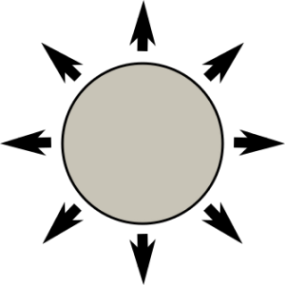
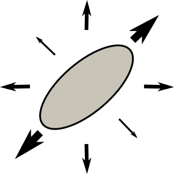
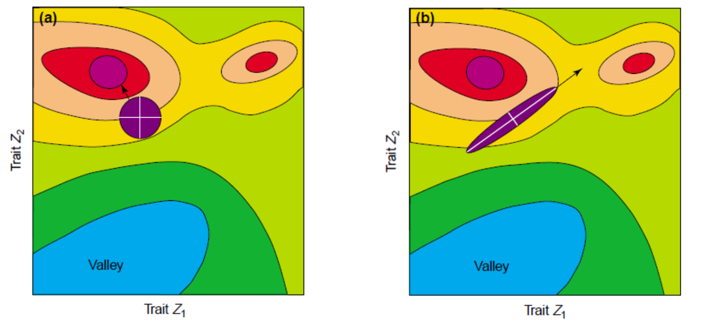
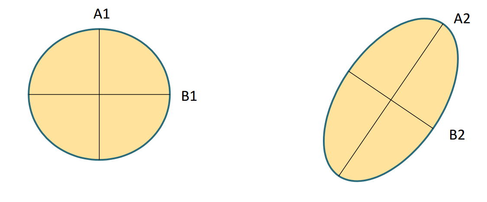
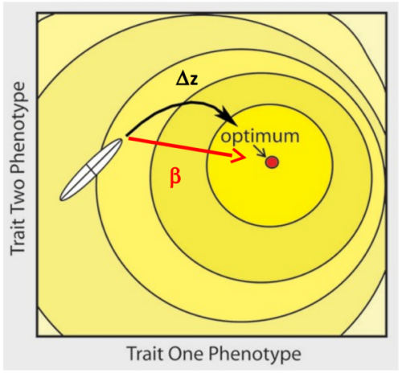
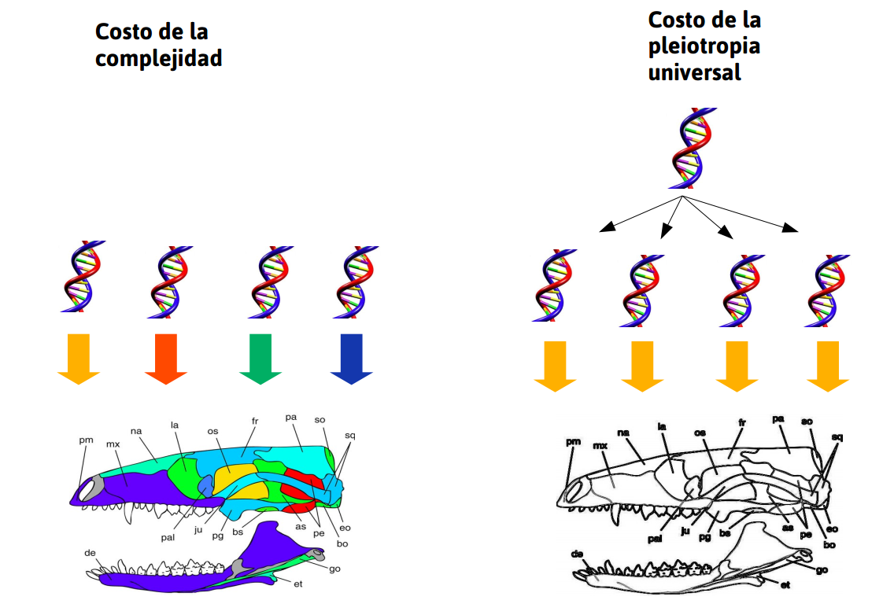

Métodos en Ecología Evolutiva
Restricciones
Santiago Benitez-Vieyra
¿Si hay selección entonces por qué suceden estas cosas?

- Existe variabilidad genética en la mayoría de las poblaciones naturales
- \(h^2\) elevadas
- respuesta a la selección artificial
- La selección en la naturaleza es fuerte
- revisión de estudios de selección fenotípica
- presencia de adaptación local
- evolución rápida
¿Porqué no se agota la variabilidad genética? ¿Por qué la tasa de evolución es generalmente tan lenta?
Entonces, ¿qué limita la respuesta a la selección?
- El carácter que medimos puede no existir… más que en nustra imaginación.
- Las mutaciones adecuadas pueden ser raras.
- Pueden existir correlaciones genéticas con otro carácter. Estructura de la matriz G.
\[\mathbf{\Delta z} = \mathbf{G} \boldsymbol{\beta}\]
\[\begin{bmatrix}
\Delta z_1\\
\Delta z_2\\
\Delta z_3
\end{bmatrix} = \begin{bmatrix}
var_1 & cov_{1,2} & cov_{1,3} \\
cov_{2,1} & var_2 & cov_{2,3}\\
cov_{3,1} & cov_{3,2} & var_3
\end{bmatrix} \times \begin{bmatrix}
\beta_1\\
\beta_2\\
\beta_3
\end{bmatrix}\]
De la misma forma que los elementos diagonales de G miden la capacidad de un carácter para responder a la selección (varianza genética aditiva), los elementos fuera de la diagonal miden en qué grado la evolución de un rasgo es acelerada o retardada por su coevolución con otro rasgo.

B <- c(0.2, 0.2, 0.2)
G <- matrix(c(1.0, 0.1, 0.1,
0.1, 1.0, 0.1,
0.1, 0.1, 1.0), 3, 3)
G%*%B
## [,1]
## [1,] 0.24
## [2,] 0.24
## [3,] 0.24

B <- c(0.2, 0.2, 0.2)
G <- matrix(c(1.0, 0.5, 0.1,
0.5, 1.0, 0.2,
0.1, 0.2, 1.0), 3, 3)
G%*%B
## [,1]
## [1,] 0.32
## [2,] 0.34
## [3,] 0.26

B <- c(0.2, 0.2, 0.2)
G <- matrix(c(1.0, -0.9, 0.1,
-0.9, 1.0, 0.2,
0.1, 0.2, 1.0), 3, 3)
G%*%B
## [,1]
## [1,] 0.04
## [2,] 0.06
## [3,] 0.26
Adaptive Landscapes


Una matriz con correlaciones genéticas altas ve restringida su respuesta a la selección . La evolución ocurre en las líneas de mínima resistencia genética. (Dolph Schluter)
Evolvability
Habilidad de las poblaciones para evolucionar en la dirección de la selección.
Para un rasgo la evolvabilidad puede ser definida en forma operativa tanto en términos absolutos como condicionales, dependiendo si consideramos el resto de los rasgos sujetos a selección estabilizadora o no. (Hansen & Houle 2008).
Métodos para estudiar las matrices G
- despomposición espectral (CPC)
- constricciones absolutas
- constricciones relativas
- respuesta a la selección (selection skewers)
A través de su estructura
La mayoría se basa en estudiar la geometría de G a través de la descomposición espectral. En ese caso:
- Los EIGENVECTORES establecen el sistema de coordenadas de G.
- Los EIGENVALORES representan la variabilidad en cada uno de los ejes de G.
\[\mathbf{G} = \lambda_1 e_1 e^T_1 + \lambda_2 e_2 e^T_2 + \lambda_3 e_3 e^T_3 + ...\]
- Determinar la existencia de constricciones absolutas

uno de los eigenvalores es cero
- Intensidad de las constricciones relativas
- Dispersión de los eigenvalores (integración): cuanto menor varianza de \(\lambda\), más esférica es G y presentará una menor constricción.

A través de su efecto en la respuesta a la selección
Ángulo entre \(\Delta z\) (la respuesta a la selección) y \(\beta\) (la selección lineal), real o simulada.

La matriz G también evoluciona
Deriva
Se espera que la reducción en el tamaño poblacional ocasione una disminución proporcional en todos los elementos de G.
Selección
Se espera que la matriz G se alinee con la dirección de la selección, por lo que esperamos un cambio en su orientación.
Mutación
Se espera que la evolución a largo plazo de G esté dominada por el matrón de mutaciones pleiotrópicas (matriz M).
¿Cómo resuelve la evolución un problema con sai infinitas dimensiones?

La gran respuesta: Modularidad!

Algunas consideraciones adicionales
- G es una medida local, propia de una población y cierto ambiente.
- A lo largo de la evolución cambian las frecuencias génicas, ergo G también cambia.
- G es una matriz de correlación. Algo causa las G que observamos (pensemos en el problema similar de determinar las causas de la selección).
- Todo rasgo es producto de múltiples causas. La dicotomía genes / ambiente es sólo una de las forma de dividirlas.
- Un organismo hereda una gran cantidad de recursos que interactúan para construir el ciclo de vida del organismo.
- El desarrollo es una construcción de los rasgos.
- La evolución es un proceso de interacción entre el organismo y el ambiente.
Las cascadas de desarrollo son los principales responsables de las correlacione observadas entre los rasgos.
- Constricciones genéticas impuestas por la arquitectura génica del sistema de desarrollo.
- Constricciones debidas a la selección natural interna (para mantener la coherencia interna en el desarrollo)